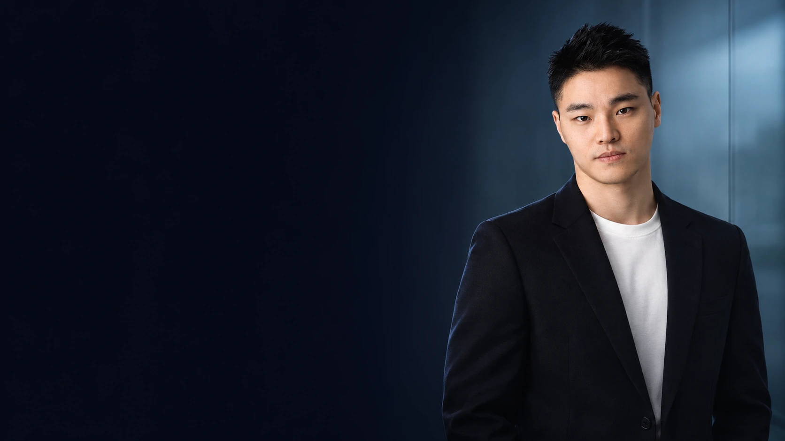
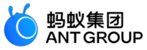
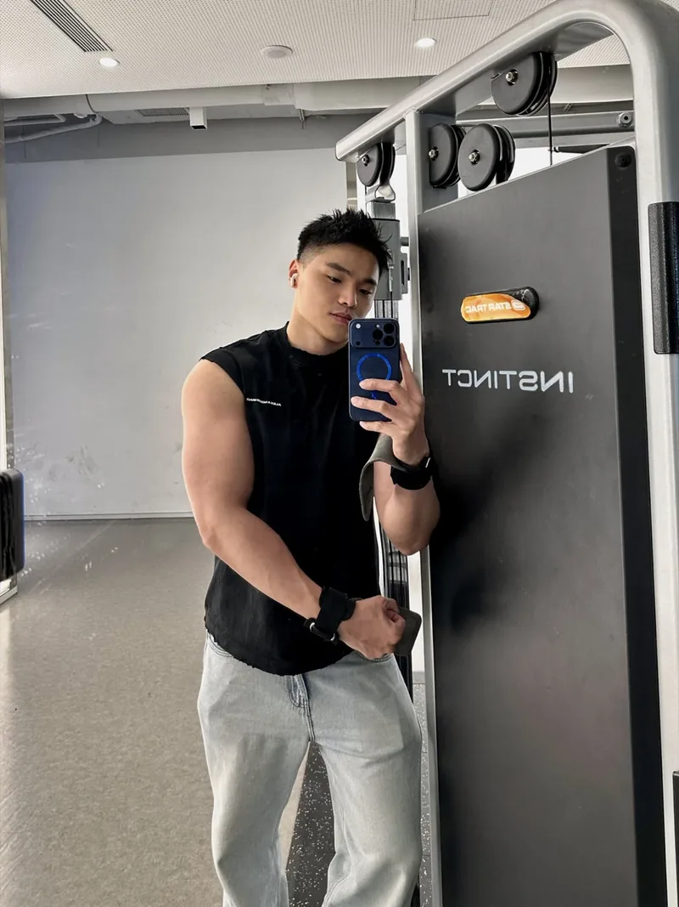

黄博AI 体验设计师
10 年+ 跨行业设计经验，专注 AI 产品体验设计
擅长将 AI 能力转化为高效、易用、可落地的产品体验。
- AI 产品设计
- 从 0 到 1 体验设计
- 复杂系统体验
- B 端 / 运营平台
- 跨行业落地
- 企业 · 消费 · 医疗
- AI 工作流优化
- 提效 · 规范 · 智能化
-
天津美术学院设计学 · 本科
经历
-
算力业务体验设计主管
超聚变 至今AI 服务器运维重构
推进算力设备运维平台的交互与界面重构。将组件规范和页面模板纳入团队的 AI 设计工作流，用于快速搭建演示原型和与开发对齐。 -

AI 体验设计师
蚂蚁集团 –B 端平台商业化与 C 端 AI 对话
推动支付宝客服工作台从定制走向通用平台。设计 AI 销售对练，试点课程完成率从 65% 提升至 90% 以上。参与 C 端「支付宝个人搭子」的对话体验设计。 -
用户体验设计师
迈瑞医疗 –医疗器械设计系统与双屏交互
参与从 0 到 1 搭建 MIS OS 设计语言，独立负责医疗设备双屏交互，将色彩、控件和布局规范落实到设备界面。 -
UI 设计师
金立手机 –手机主题的视觉与交互
负责多款手机主题应用的界面与交互设计，覆盖用户从浏览、选择到应用主题的完整流程。
AI 设计实践
关于我
我是黄博（Nick），毕业于天津美术学院，有 10 年以上跨行业体验设计经验。目前在超聚变负责 AI 服务器运维平台的体验设计，推进平台重构和团队 AI 设计工作流建设。
- 做过软件，也做过设备
- 从支付宝客服工作台到迈瑞医疗双屏，再到算力设备运维平台，我关注界面怎样融入员工和专业用户的实际工作。
- 把复杂业务做成可用的产品
- 把销售训练串成 AI 对练、反馈、复盘的闭环，也参与将定制客服系统重构为可配置的平台。
- 把设计规范用到交付里
- 从搭建 MIS OS 设计语言，到把组件规范和 AI Coding 放进日常工作流，我习惯把设计做法沉淀下来，方便团队复用。
